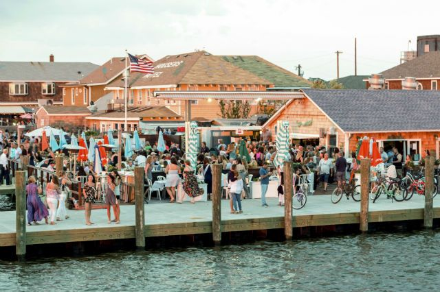
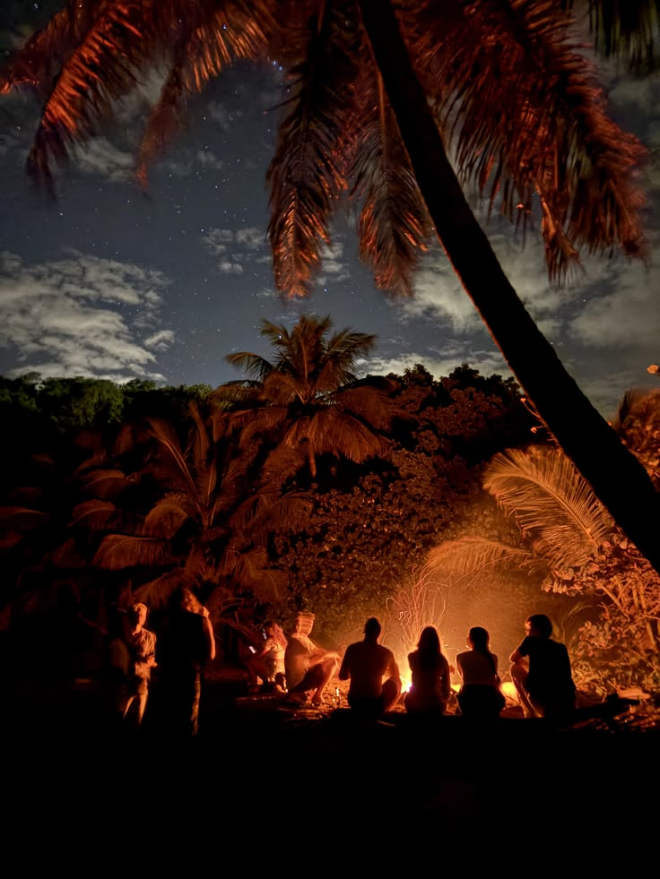
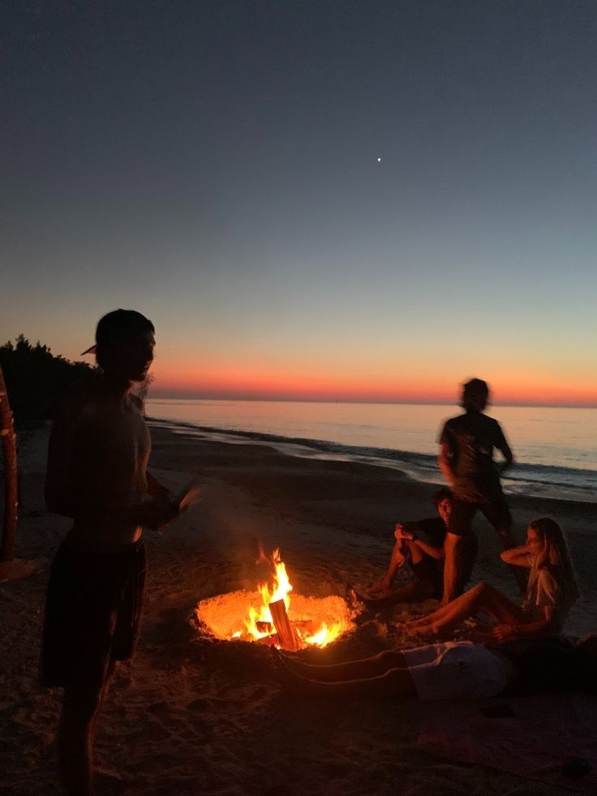
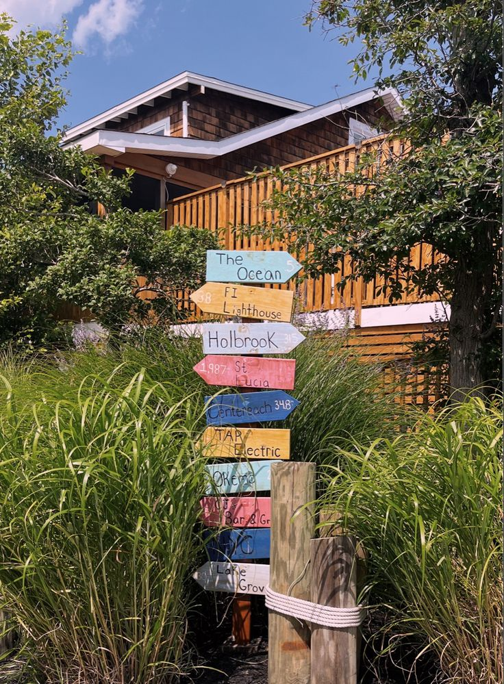

Fire Island felt like stepping out of the usual rush the moment the ferry pulled away from the mainland. We spent most of our time on the beach, walking the shoreline barefoot, chasing waves, and watching the sun sink into the Atlantic with nothing but sand and sky in front of us. When we needed a break from the sea, we headed into the park and followed the boardwalk trails through the Sunken Forest, where the salty air turned into shade and quiet. We even climbed the Fire Island Lighthouse for a view of the whole island stretching out in both directions. It was simple, unplanned, and exactly the kind of adventure I needed.



Visit the Fire Island National Seashore website to plan your trip.